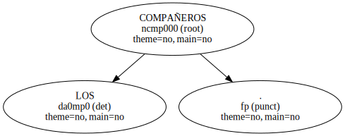
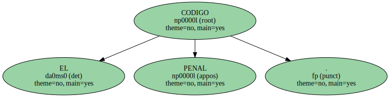
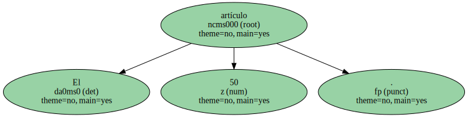
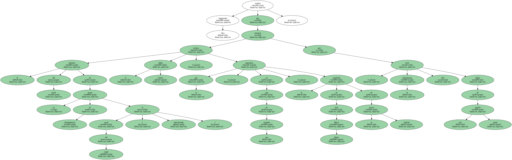
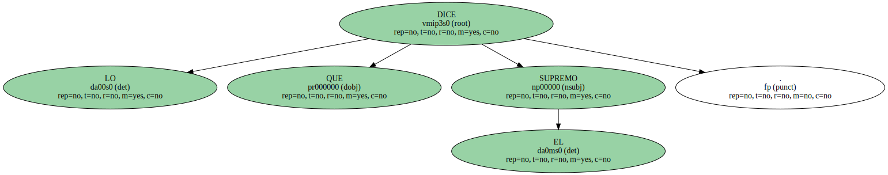
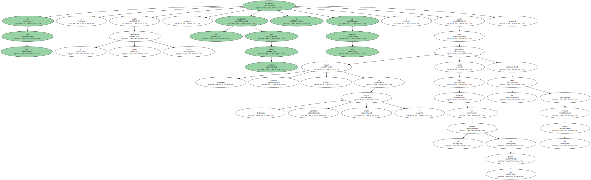

LOS COMPAÑEROS.
" Injustificable " y " muy benévola " fueron algunos de los calificativos que varios jueces utilizaron ayer para referirse a la petición del fiscal para el jefe de la inspección del Consejo General del Poder Judicial ( CGPJ ) , José María Bento.
EL CODIGO PENAL.
El artículo 50.
LAS CONSECUENCIAS.

Otro magistrado explicó que la decisión del fiscal de no acusar de desobediencia al vocal del CGPJ excluye el delito doloso ( intencionado ) , lo que supondría , en caso de una condena , la expulsión de José María Bento de la carrera judicial , mientras que la imprudencia sólo sería objeto de una sanción penal.
LO QUE DICE EL SUPREMO.
La petición de la fiscalía de Alicante contra el magistrado del CGPJ contradice al menos una sentencia del Tribunal Supremo que absolvió al diputado socialista Javier Barrero de un delito de desobediencia grave , por no someterse a la prueba del alcoholímetro , al considerar que el acusado no presentaba síntomas externos de que conducía bajo los efectos del alcohol.
En este caso , según la propia calificación fiscal , el magistrado del Poder Judicial se encontraba en esa situación , puesto que presentaba " signos externos " de " profundo estado etílico " cuando fue requerido por los agentes de la policía y se negó a realizar la prueba.
